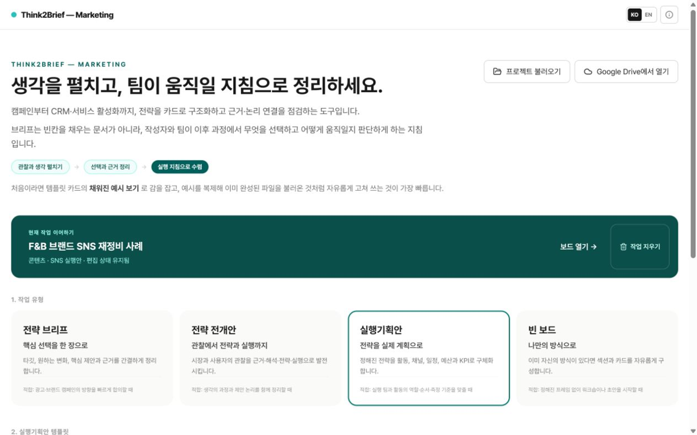
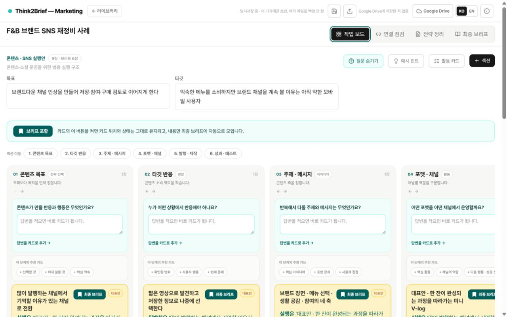
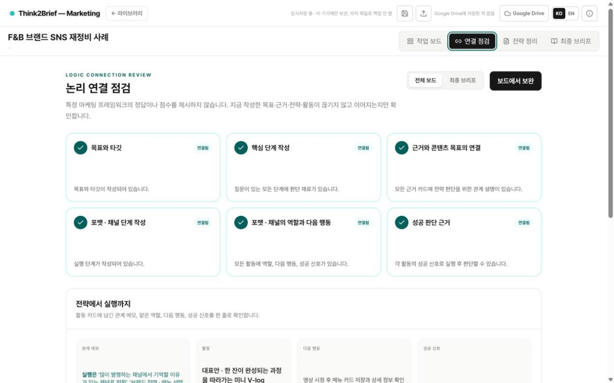
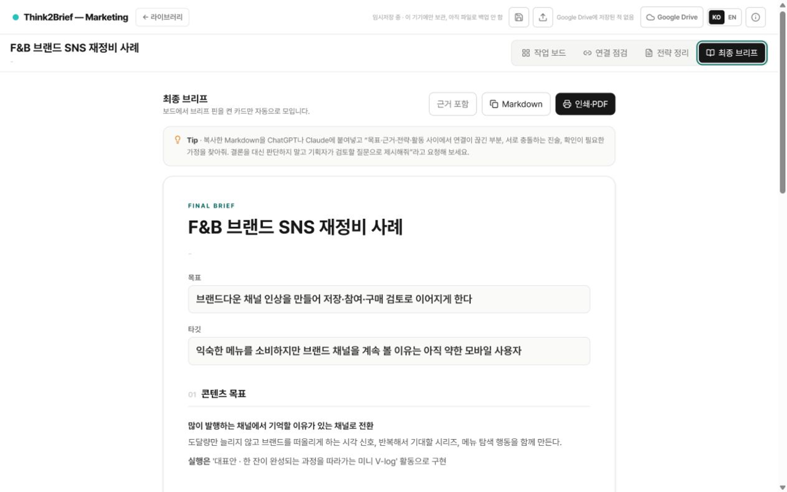

판단
기존 선택 기준이 달라지고 있다
관찰한 변화와 의미를 한 장에 정리합니다.
근거
THINK2BRIEF — MARKETING
판단, 근거, 전략, 활동을 카드로 구조화하고 지금 만든 논리가 중간에 끊기지 않았는지 확인하세요. Think2Brief는 마케팅의 정답을 대신 고르는 도구가 아니라, 기획자의 생각이 이어지는 과정을 선명하게 만드는 작업 공간입니다.
메시지를 행동의 변화로 연결한다
일상의 선택을 더 단순하게 만들고 싶은 사용자
관찰한 변화와 의미를 한 장에 정리합니다.
앞선 근거에서 선택한 방향을 연결합니다.
다음 행동과 성공 신호까지 기록합니다.
WHAT IT CHECKS
소비자의 행동과 시장의 변화에는 하나의 정답이 없습니다. Think2Brief는 특정 마케팅 프레임워크의 점수나 성공 확률을 제시하지 않습니다.
지금 작성한 목표·근거·전략·활동이 끊기지 않고 자신만의 논리로 이어지는지 확인합니다.
HOW IT WORKS
기획 방식은 하나로 고정하지 않습니다. 상황에 맞는 질문 구조를 고르고, 판단과 근거를 카드로 쌓은 뒤, 연결을 점검해 브리프로 완성합니다.
빈 보드, 빠른 브리프, 포지셔닝 등 작업에 맞는 시작점을 고릅니다.

여러 판단과 근거를 카드로 만들고 선택·후보·제외 상태를 구분합니다.

논리의 정답이 아니라 작성한 목표·근거·전략·활동이 끊기지 않는지 확인합니다.

브리프에 포함한 카드만 모아 검토하고 Markdown 또는 PDF로 정리합니다.

MORE TO KNOW
브라우저에 자동 저장하고, 필요할 때 선택한 프로젝트만 Google Drive에 저장하거나 불러옵니다. 개발자에게는 전송되지 않습니다.
개인정보 처리방침 보기 →완성한 브리프를 문서나 인쇄물로 바로 내보낼 수 있습니다.
Think2Brief 회원가입이나 결제 없이 모든 핵심 기능을 사용할 수 있습니다. Drive 연동만 Google 로그인이 필요합니다.
FROM THINKING TO BRIEF